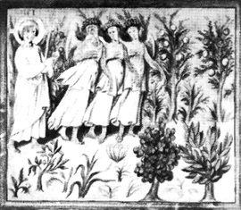
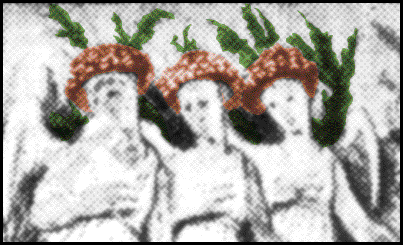

|  |
| |
After running from the Roman Empire’s police for almost 300 years, Christian Orthodox priests had become their bosses. Starting in the 4th, 5th, and 6th Centuries C.E., pagan religions and all the different Christian sects, belief systems, knowledge, gospels, etc., such as the Essenes, Gnostics, and Merovingians (Franks), were either incorporated into or edited out of official doctrine and hierarchy.
Finally, in a series of councils, all contrary dogmas (e.g., that the Earth was round, and the sun and stars were more than five to 17 miles away) were summarily outlawed and driven underground during the Dark Ages, 400-1000+ C.E.
By the early Middle Ages, at the beginning of the 11th Century C.E., virtually all powers were placed in the hands of the Church and Pope; first, by Germanic conquerors, and later by powerful Spanish and French Kings and powerful Italian merchants and nobles (the Borgias, Medicis, and other megalomaniacs) probably to protect their trade secrets, alliances, and sources of wealth.
All European people were forced to adhere to the “Holy” Roman Empire policy: Zero tolerance by a fundamentalist church/police-state with blind faith in one, unquestioned version of how to worship God…and the Pope’s infallibility.
Political rulers aided and abetted the Church in this fraud, as their power now rested only on their new Christian dogma, the patriarchal “Divine right” to rule.
They enacted laws with fantastically vicious punishments for even the slightest infraction or heresy.* Heretics were mercilessly sought out by fanatical, sadistic inquisitors using perverted forms of torture to extract confessions and as punishment.
* Webster’s dictionary defines “Her-e-sy (her´e se)” as 1: a religious belief that is opposed to church dogma. 2: any opinion (in philosophy, politics, etc.) opposed to official or established views or doctrines. 3: the holding of any such belief or opinion.
This system kept most of the Western world’s inhabitants in a state of constant terror, not only for their own physical safety and freedom, but also for their eternal spirit, with “Hell” lurking mere inches below the surface for those excommunicated by the church.

Reference to cannabis and other spiritual drug use is often hidden in art during periods of repression. Stylized hemp leaves surround the angels’ heads, and their halos resemble the cap of the amanita muscaria mushroom in The Third Day of Creation, entrance hall of San Marco painted in Venice, Italy. (Sixth to Seventh Century C.E.)

the authorized on-line version of Jack Herer’s “The Emperor Wears No Clothes”
| previous page | Chapter 10 | next page |
|
 |
 |
 |
 |